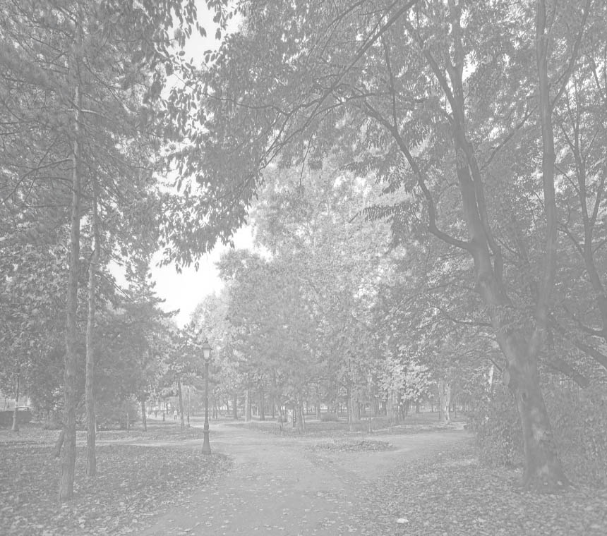

Najnovije promocije:
Prva promocija
Druga Promocija
Treca Promocija
Cetvrta Promocija
Peta Promocija
Sve Trenutne Promocije:
Prva promocija
Druga Promocija
Treca Promocija
Cetvrta Promocija
Peta Promocija
Sve Trenutne Promocije:

Kroz Zemun
Ova stranica je posvećena ljudima koji vole da izlaze na mesta na kojima može dobro da se provede - prvenstveno zemuncima, a i ljudima koji dolaze da posete naš prelepi deo grada. Zemun je prepun dobrih kafića, restorana, kafana, tradicionalnih jela i dobre zabave. Zemunci su poznati kao ljudi koji znaju da se dobro provedu i uživaju, iz tog razloga on okuplja sve ljude istog razmišljanja iz Srbije, a i šire. Nadamo se da će vam naš sajt pomoći da izaberete pravo mesto za izlazak sa društvom.
© 2014 krozzemun.rs
